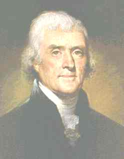

Thomas Jefferson considered the Declaration of Independence his greatest achievement. Drafted in June of 1776, the Declaration of Independence expressed the ideals and philosophy that marked the beginning of self-government in America. Although most of the ideas featured in the Declaration were not new - in fact they were commonplace ideas of the time - Mr. Jefferson is known for the eloquence and passion of their expression.
in America. Although most of the ideas featured in the Declaration were not new - in fact they were commonplace ideas of the time - Mr. Jefferson is known for the eloquence and passion of their expression.
Early Life
Thomas Jefferson was born on April 13, 1743 on a farm in Albemarle, Virginia. His ancestors were among the first settlers of the state of Virginia. His father, Peter, and his mother, Mary Randolph, had six daughters and two sons. Thomas was the elder of the sons. Jefferson's father Peter, a farmer and surveyor, died when Thomas was fairly young. Upon his death, the young Thomas Jefferson inherited a considerable estate, including the land where Jefferson later built his own family home, Monticello.
Education
Jefferson attended school at the College of William and Mary, then practiced law and became the Albemarle County representative to the Virginia legistlature. These activities helped prepare him for his task of authoring the Declaration of Independence.